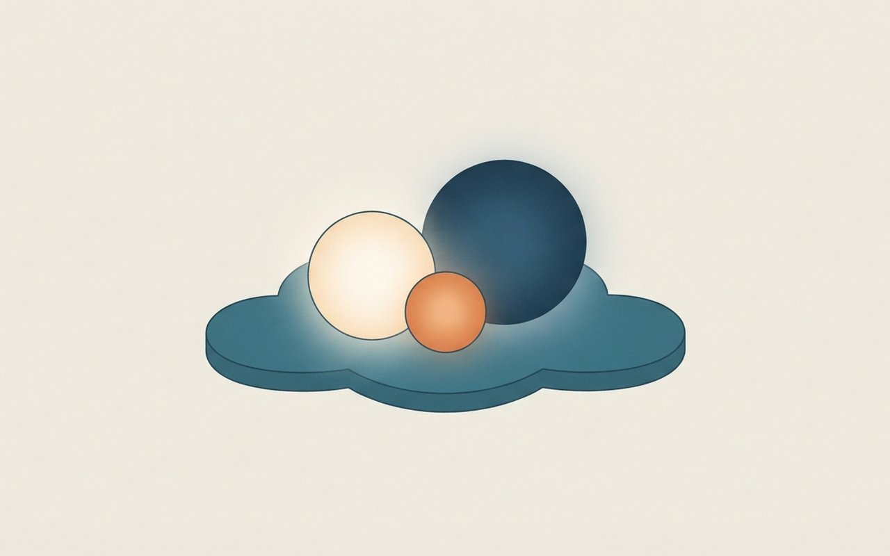
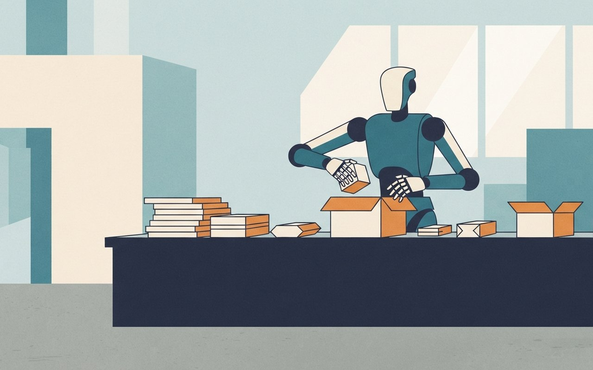

앤트로픽은 사용자가 없을 때도 일하는 에이전트 앱 '클로드 듀엣'을 연구 프리뷰로 공개했고, 구글 클라우드는 OpenAI 모델 3종을 선별 고객에게 열었습니다. 영국은 AI 바이오보안·사이버 방어에 투자 계획을 내놨고, 맥북에서 도는 오픈 가중치 코딩 모델 '플린트'가 나왔습니다. 국내에서는 HD현대로보틱스가 양팔 로봇을 공개했고, AI 해킹 충격 뒤 5대 은행의 보안 예산이 어떻게 달라졌는지도 함께 봅니다.
🎧 듣기 · 약 2분
🎧 낭독 원고 보기
10월 26일 월요일, AI 브리프입니다. 이번 주 새로 나온 테크 소식 여섯 가지를 전해 드립니다. 서비스와 클라우드, 정책, 모델, 로봇, 보안 순서입니다.
먼저 앤트로픽입니다. 사용자가 없을 때도 일을 이어 가는 에이전트 앱 클로드 듀엣을 연구 프리뷰로 공개했습니다. 지금은 대기자 명단 방식이고 미국 프로·맥스 구독자부터 쓸 수 있습니다. 메시지를 보내거나 결제, 서명, 삭제를 하기 전에는 먼저 승인을 받고, 증권 거래와 계좌 간 송금은 승인해도 할 수 없습니다.
구글 클라우드는 OpenAI 모델 세 가지를 모델 가든에 올렸습니다. GPT-6 아스트라, GPT-6.1 솔, GPT-6 루나입니다. 다만 일반 공개가 아니라 선별된 기업 고객 대상 프라이빗 프리뷰이고, 데이터 무보존과 기밀 컴퓨팅 기능은 아직 곧 제공 예정입니다.
영국은 AI 바이오보안과 사이버 방어, 산업 투자 계획을 발표했습니다. AI 바이오보안 연구소에 1억 파운드가 들어가고, OpenAI와 앤트로픽은 최대 2억 파운드어치 모델 사용 크레딧을 제공합니다. 이 크레딧은 현금이 아닙니다.
맥북에서 돌아가는 코딩 모델도 나왔습니다. 리커시브가 공개한 플린트는 전체 400억 개 매개변수 가운데 토큰마다 약 25억 개만 쓰는 구조이고, 가중치가 공개됐습니다. 속도와 성능 우위는 개발사가 밝힌 수치입니다.
국내 소식입니다. HD현대로보틱스가 사람 같은 팔과 다섯 손가락을 가진 양팔 로봇을 공개했습니다. 한쪽 팔이 7킬로그램까지 들 수 있고, 이족보행 모델은 로드맵의 마지막 단계입니다. 초기 용도는 포장과 조립입니다.
마지막은 은행 보안 예산입니다. 파이낸셜뉴스에 따르면 5대 은행의 올해 정보보안 예산은 합쳐서 약 3,320억 원입니다. 내년에는 약 4,500억 원을 넘을 전망입니다.
지금까지 10월 26일 AI 브리프였습니다. 자세한 내용과 출처는 카드뉴스에서 확인하세요.
Service — 클로드 듀엣
秘
승인 필수
앤트로픽 '클로드 듀엣' 연구 프리뷰 — 사용자가 없을 때도 일하는 에이전트 앱
앤트로픽이 21일 에이전트 앱 '클로드 듀엣'을 연구 프리뷰로 공개했다. 클로드가 먼저 할 일을 알려 주고, 맡긴 일을 처리하고, 사용자가 자리에 없을 때도 계속 일한다. 전문직과 소상공인이 대상이며 iOS·안드로이드 독립 앱과 claude.ai에서 쓴다. 대기자 명단 방식이고 미국 프로·맥스 구독자부터 열린다(앤트로픽 공식 안내).
프로·맥스에 포함되고 사용 한도는 기존 클로드와 같다. 연결된 계정을 몇 시간마다 확인하며 이 백그라운드 점검도 한도에 들어간다. 6,000개가 넘는 커넥터·플러그인을 쓸 수 있고, 자체 가상 머신에서 돌아 노트북이나 폰이 꺼져 있어도 작동한다. 개인 심부름 지원은 약하고 브라우저 화면 보여 주기는 아직 안 된다고 안내문에 적혀 있다.
대상·방식전문직·소상공인 · iOS·안드로이드 앱, claude.ai · 대기자 명단 · 미국 프로·맥스 구독자부터
승인 필요메시지 전송 · 결제 · 서명 · 삭제 전에 할 일을 정확히 보여 주고 승인을 기다림
승인해도 금지증권 거래 · 계좌 간 송금
규모·한도커넥터·플러그인 6,000개 이상 · 사용 한도는 기존 클로드와 동일, 백그라운드 점검 포함
🤖 알고 보면 달라지는 것
'알아서 해 주는' 도구일수록 어디까지 맡길지가 설계의 핵심이다. 안내문은 보내기·결제·서명·삭제 네 가지를 승인 뒤에만 하도록 막고, 증권 거래와 계좌 간 송금은 아예 금지했다. 큰 작업일수록 모델 호출이 늘어 한도를 더 쓴다는 점도 본문에 있다. 한국 출시 시기는 안내문에 나와 있지 않다.
앤트로픽 — 클로드 듀엣 안내앤트로픽 공식 안내 페이지(10/21 발표) 공식 단일 출처 · 교차 확인 못 함 · 모든 기능·한계는 회사 설명 · 한국 출시는 안내문에 없음 (확인 2026-10-26)
잠든 사이에도 일하는 클로드 듀엣 공개
앤트로픽이 사용자가 없을 때도 일하는 에이전트 앱 클로드 듀엣을 공개했어요. 보내기·결제·서명·삭제는 승인을 받고 증권 거래와 계좌 간 송금은 승인해도 막아요.
6,000개 이상|쓸 수 있는 커넥터·플러그인
An abstract phone screen showing a friendly assistant presenting a checklist for approval while a moon and a desk lamp glow in the background, conceptual schematic, not a real photograph, no text, no logos
Cloud — 구글 클라우드
雲
한 곳에 모인 모델
구글 클라우드, OpenAI 모델 3종 프라이빗 프리뷰 — 제미나이·클로드·GPT를 한 곳에서
구글 클라우드가 21일 모델 가든에 OpenAI의 GPT-6 아스트라·GPT-6.1 솔·GPT-6 루나를 선별된 기업 고객 대상 프라이빗 프리뷰로 올렸다고 공식 블로그에서 밝혔다. 아스트라는 코딩·컴퓨터 사용·전문 업무·과학 연구 같은 까다로운 업무용, 솔은 아스트라에 가까운 성능에 비용을 낮춘 모델, 루나는 빠르고 비용 효율적인 일상용이다.
구글은 제미나이·클로드·GPT를 모두 제공하는 유일한 하이퍼스케일 클라우드라고 주장했고, 200개가 넘는 자사·타사·오픈 모델을 제공한다고 했다. 구글 클라우드 마켓플레이스로 직접 거래하고 한 장의 청구서로 받으며, 기존 클라우드 약정에서 차감할 수 있다. 데이터 무보존(ZDR)과 기밀 컴퓨팅은 '곧 제공'이다.
OpenAI 모델 3종 — 구글이 밝힌 위치
구글 클라우드 블로그의 모델 설명이며 성능 순위가 아니라 용도 구분이다. 성능 점수는 블로그에 없다.
제공 방식모델 가든 · 선별된 기업 고객 프라이빗 프리뷰 (10/21 발표, 일반 공개 아님)
모델GPT-6 아스트라 · GPT-6.1 솔 · GPT-6 루나 · 구글 클라우드 AI 플랫폼의 자사·타사·오픈 모델 200개 이상(구글 주장)
거래구글 클라우드 마켓플레이스 직접 거래 · 한 장의 청구서 · 기존 클라우드 약정 차감
곧 제공데이터 무보존(ZDR) · 기밀 컴퓨팅 ⚠ 변동 가능
🤖 알고 보면 달라지는 것
발표 제목만 보면 전면 제공 같지만 본문은 관심 양식을 신청하는 선별 프리뷰다. 기업 입장에서는 모델을 따로 계약하지 않고 이미 쓰는 클라우드 약정으로 여러 회사 모델을 고를 수 있다는 점이 핵심이고, 데이터 무보존과 기밀 컴퓨팅이 아직 '곧'인 만큼 민감한 데이터를 다루는 곳에 필요한 두 기능은 아직 '곧 제공' 단계다.
구글 클라우드 블로그 — OpenAI 모델 프리뷰구글 클라우드 공식 블로그(10/21) 공식 단일 출처 · 교차 확인 못 함 · '유일한 하이퍼스케일 클라우드'는 구글 자체 주장 · 일부 집계 사이트는 22일로 표기하나 공식 본문은 21일 (확인 2026-10-26)
구글 클라우드에 OpenAI 모델 3종
구글 클라우드가 GPT-6 아스트라·솔·루나를 선별 고객에게 프라이빗 프리뷰로 열었어요. 일반 공개는 아니고, 데이터 무보존 기능은 아직 곧 제공이에요.
200개 이상|구글 AI 플랫폼 모델 수(구글 주장)
Three abstract glowing orbs of different sizes gathered on one cloud-shaped platform, conceptual schematic, not a real photograph, no text, no logos

Policy — 영국 AI 투자
盾
현금 아닌 크레딧
영국, AI 바이오보안·사이버 방어·산업에 투자 — 2억 파운드는 현금이 아닌 모델 크레딧
영국 정부가 24일(현지) AI 투자 계획을 발표했다. AI 바이오보안에는 총 1억 6,500만 파운드가 들어가는데, 세계 최초를 내세운 AI 바이오보안 연구소에 1억 파운드, 감시·의료 대응에 6,500만 파운드다. OpenAI와 앤트로픽은 최대 2억 파운드어치 모델 사용 크레딧을 제공하며 이는 현금이 아니다(인공지능신문).
사이버 쪽은 AI 보안연구소 1억 2,000만, 국가 사이버 방패 6,000만(AI·사이버보안 혁신기업 지원 챌린지 펀드 2,500만 포함), 핵심 인프라 취약점 센터 NERV 7,000만 파운드다. 산업 쪽은 Sovereign AI Fund 6,000만 추가, 공공 조달 R&D 6,000만, 에든버러 첨단 칩 설계 아카데미 1,800만 파운드다. 정책 세부는 다음 주 예산안에서 공개된다. 기사 제목의 총액은 '6억 파운드 이상'이며 이 카드의 항목은 그 일부다.
영국 AI 투자 — 항목별 금액
막대 길이는 금액에 정비례한다(0에서 시작). 기사에 나온 주요 항목만 그렸고, 항목을 합친 총액은 기사 표기와 달라 적지 않았다. 바이오보안 합계 165 = 100 + 65(단위 백만 파운드).
바이오보안총 1억 6,500만 파운드 = 연구소 1억 + 감시·의료 대응 6,500만
사이버AI 보안연구소 1억 2,000만 · 국가 사이버 방패 6,000만 · NERV 7,000만
산업Sovereign AI Fund 6,000만 추가 · 공공 조달 R&D 6,000만 · 칩 설계 아카데미 1,800만
크레딧OpenAI·앤트로픽 최대 2억 파운드어치 모델 사용 크레딧(현금 아님) · 세부는 다음 주 예산안
🤖 알고 보면 달라지는 것
가장 큰 숫자인 2억 파운드는 정부 지출이 아니라 AI 기업이 내놓는 모델 사용 크레딧이다. 그래서 정부 예산으로 잡히는 돈과 기업이 제공하는 이용권을 구분해서 읽어야 한다. 이 내용은 인공지능신문 한 곳의 보도다.
인공지능신문 — 영국 AI 투자 계획인공지능신문(10/25 11:33) 단일 출처 · 교차 확인 못 함 · 영국 현지 발표는 10/24 · 환산액·정책 세부는 적지 않음 (확인 2026-10-26)
영국 AI 바이오보안 1억 6,500만 파운드
영국이 AI 바이오보안에 1억 6,500만 파운드를 투자해요. 사이버 방어와 산업 투자 계획도 함께 나왔어요. 2억 파운드는 현금이 아니라 모델 사용 크레딧이에요.
2억 파운드|모델 사용 크레딧(현금 아님)
Model — 로컬 코딩 모델
燧
2.5B만 활성
맥북에서 돌아가는 코딩 모델 '플린트' 공개 — 40B 중 토큰당 약 2.5B만 쓴다
리커시브(Recursive)가 23일 오픈 가중치 코딩 모델 '플린트(Flint)'를 공개했다. 전체 매개변수는 400억 개(40B)이고 토큰마다 약 25억 개(2.5B)만 활성화하는 구조다. 컨텍스트는 최대 512k(권장 256k 이내)이며, 소규모 팀이 자동 연구 시스템으로 4개월이 안 되는 기간에 만들었다고 한다.
개발사는 50B 미만 MoE 모델 중 에이전트 코딩 벤치마크 최상위이고, 25~40B 밀집 모델과 대등하면서 5배 넘게 빠르다고 주장했다. 속도는 짧은 컨텍스트 기준으로 M4 Pro 맥북 프로에서 초당 125토큰 이상, 64GB RTX 스파크에서 150토큰 이상이다. 가중치는 허깅페이스에 Apache 2.0으로 공개됐다. 벤치마크 점수는 본문에 없다.
구조MoE · 전체 40B · 토큰당 활성 약 2.5B(약 6%, 계산: 2.5÷40) · 컨텍스트 최대 512k
속도(개발사)M4 Pro 맥북 프로 초당 125토큰 이상 · 64GB RTX 스파크 150토큰 이상 (짧은 컨텍스트 기준)
공개허깅페이스 가중치 · Apache 2.0 · llama.cpp·Ollama·LM Studio·vLLM 등 호환
주의벤치마크 우위는 점수 없이 개발사 주장 · 독립 검증 없음
🤖 알고 보면 달라지는 것
'40B'라는 이름만 보면 무거울 것 같지만 한 번에 쓰는 것은 약 2.5B라 노트북에서 돌릴 수 있다는 것이 개발사의 설명이다. 다만 속도는 짧은 컨텍스트 조건이고 성능 순위는 점수 없이 개발사 주장이라 직접 써 보기 전에는 판단하기 어렵다.
리커시브 — 플린트 공개 글리커시브 공식 페이지(본문 날짜 10/23) 개발사 단일 출처 · 교차 확인 못 함 · 벤치마크·속도는 모두 개발사 주장 · 일부 집계 사이트는 10/21로 표기 (확인 2026-10-26)
맥북에서 돌아가는 코딩 모델 플린트
리커시브가 오픈 가중치 코딩 모델 플린트를 공개했어요. 전체 400억 개 중 토큰마다 약 25억 개만 써요. 속도와 성능 우위는 개발사가 밝힌 수치예요.
125토큰|맥북 프로 초당 속도(개발사)
A slim laptop on a desk with a small glowing chip and a few code-like abstract lines floating above it, conceptual schematic, not a real photograph, no text, no logos
Robot — 국내 로봇
腕
보행은 마지막
HD현대로보틱스, 팔 한쪽 7kg 드는 양팔 로봇 공개 — 이족보행은 다음 단계
HD현대로보틱스가 대구 EXCO에서 21일 개막한 FIX 2026에서 '지능형 양팔 로봇'을 공개했다. 사람 같은 팔과 다섯 손가락을 갖췄고 팔 한쪽이 7kg까지 들 수 있으며 작업 반경은 630mm다. 자체 로봇 파운데이션 모델(RFM)로 주변을 인식하고 동작을 만들어, 동작마다 사람이 프로그래밍하지 않아도 된다고 한다(ZDNet Korea).
로드맵은 바퀴형 이동 플랫폼을 더한 뒤 이족보행 모델로 가는 순서다. 초기 용도는 포장·조립이고 이후 용접·도장으로 넓힌다. 학습한 작업 지능은 기존 산업·협동 로봇에도 이식한다. 지난 9월에는 힘·촉각 센서 업체 AiDIN Robotics에 투자했다.
공개10/21 개막 FIX 2026(대구 EXCO) · 지능형 양팔 로봇 · 다섯 손가락
사양팔 한쪽 가반하중 7kg · 작업 반경 630mm
로드맵양팔 → 바퀴형 이동 플랫폼 → 이족보행 모델
용도초기 포장·조립 → 이후 용접·도장 · 학습한 작업 지능은 기존 산업·협동 로봇에 이식
🤖 알고 보면 달라지는 것
이번에 공개된 것은 걷는 휴머노이드가 아니라 상반신 로봇이다. 팔당 7kg과 630mm라는 사양은 사람을 대신해 걷기보다 공장의 포장·조립 같은 정밀 작업을 먼저 겨냥한다는 뜻으로 읽힌다. 이족보행은 로드맵의 마지막 단계다.
ZDNet Korea — HD현대로보틱스 양팔 로봇ZDNet Korea(10/21 20:43) 단일 출처 · 교차 확인 못 함 · 사양·로드맵은 회사 설명 · 투자액은 적지 않음 (확인 2026-10-26)
HD현대로보틱스 양팔 로봇 공개
HD현대로보틱스가 사람 같은 팔과 다섯 손가락을 가진 양팔 로봇을 공개했어요. 한쪽 팔이 7kg까지 들 수 있고, 이족보행 모델은 다음 단계예요.
7kg|팔 한쪽 가반하중
A generic upper-body two-armed robot with five-fingered hands packing small boxes on a factory table, conceptual schematic, not a real photograph, no text, no logos

Security — 은행 보안 예산
鎖
보안 예산 증액
AI 해킹 충격 뒤 5대 은행 정보보안 예산 — 올해 3,320억 원, 내년 약 4,500억 원 넘는 전망
파이낸셜뉴스가 25일 보도한 5대 은행의 올해 정보보안 예산은 합쳐 약 3,320억 원으로 지난해보다 약 120억 원 늘었다. 은행별로 KB국민(676억→861억)·하나(530억→636억)·NH농협(753억→801억)은 늘었고, 신한(453억→406억)과 우리(787억→616억)는 줄었다.
내년에는 약 4,500억 원을 넘을 전망이다. 우리·농협이 올해 수준을 유지해도 약 4,500억 원이 된다는 추정이며 신한 증액 규모는 공개되지 않았다. 국민·하나는 1,000억 원 이상으로 늘릴 계획이고, 신한은 해킹으로 고객 정보가 유출된 뒤 업계 최대급 증액을 검토하며, 우리는 20% 넘는 증액을 검토한다. 농협은 11월 말~12월 초 확정한다.
5대 은행 정보보안 예산 — 2025 vs 2026
2025년2026년
막대 길이는 금액에 정비례한다(0에서 시작). 2025년 합계는 기사 표기와 반올림이 달라 적지 않았다. 2026년 5개 은행 합계는 약 3,320억 원, 내년 약 4,500억 원 넘는 수치는 추정이다.
2026년 합계약 3,320억 원 (861+406+636+616+801, 계산) · 지난해보다 약 120억 원 증가